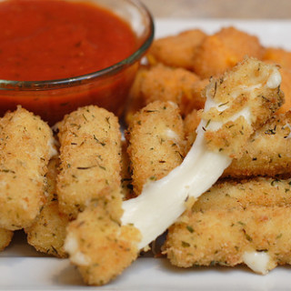

Mozzarella Sticks

Mozzarella sticks are one of those foods that I LOVE, but I always hate myself for ordering. It’s literally a fried stick of cheese. But that’s not why I hate myself it, because they’re fricking delicious – it’s because
I have zero awareness of when I need to stop eating them.
Ingredients
- 1⁄4 cup flour
- 1 cup Italian style breadcrumbs
- 2 eggs
- 1 tablespoon milk
- 1 lb mozzarella cheese,
cut into 3/4 inch x 3/4 inch strips (or you can use string cheese and cut each in half)
- 1 cup vegetable oil
- 1 cup jarred pizza sauce or 1 cup marinara sauce
Steps
- Whisk eggs and milk together.
- Coat each piece of cheese with flour, then dip in egg and then roll in bread crumbs.
- Dip in egg and crumbs again.
- Freeze for 6 to 24 hours before frying.
- Heat oil in skillet and cook sticks for about a minute on each side, or until golden and before cheese starts to leak.
- Drain on paper towels.
- Serve with sauce for dipping.